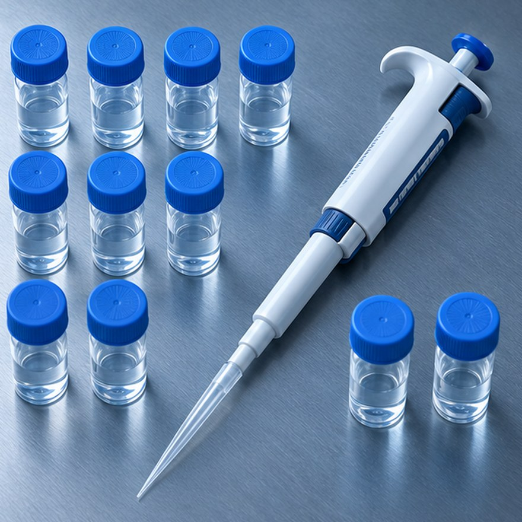

Laboratory Equipment and Glassware in Arunachal Pradesh
If you are sourcing laboratory equipment in Arunachal Pradesh, start by listing the work each bench needs to perform. That may mean distributed field sampling or school practicals. Use this guide to compare equipment, glassware and consumables, plan how to receive the order, and send Gauri & Sons Group a quotation request with the details needed to assess it.
For an enquiry from Itanagar, Naharlagun and Pasighat, include the destination PIN code, the required-on-site date, and the quantities for that address. For multiple premises, list each separately. Product illustrations show equipment categories. Ask for the exact model, specification and availability before approving a purchase.
Request a Quotation
Plan a laboratory order for Arunachal Pradesh
When equipment is shared between a collection team and a central laboratory, separate what travels in a carry case from what stays on the workbench. Ask receiving teams to record the condition of cartons before they are moved onward.
Start with the items that leave the laboratory. Count the bottles, closures, racks, labels and spare components required for each collection group. Select containers against the laboratory’s own sample handling requirements and verify the item specifications with the person responsible for receipt before ordering. Give the purchasing team a separate list for the glassware and instruments that remain in the laboratory.
Map the movement of the supplies from the receiving desk to the department. A consignment sent to a central store can still need labelled inner cartons or a packing list broken down by destination. If teams share equipment, decide who keeps replacement caps and who checks that each kit comes back complete.
Use one delivery line per receiving campus, with its own consignee and unpacking instructions.
Purchasing examples for local laboratories
Use the actual receiving desk for an order moving through Itanagar or Naharlagun to more than one facility. If a Pasighat team is receiving part of the order separately, make a copy of its own carton list so the staff can check quantities without waiting for the central buyer.
Build a short inventory of caps, racks and glassware that fit the kit. This gives the next buyer a starting point when only one piece needs replacing. Compare the cost of stocking a few matching parts locally with ordering a complete kit after a component is lost.
What to include in the purchase list
Start with a short description of the work and group the list by category. A buyer planning for distributed field sampling can put the required sample or working volume on the glassware line, the relevant operating requirement on the instrument line, and the expected usage on the consumables line. Specify where substitutes are acceptable and have the laboratory user approve any proposed change in material, fit or performance.
- Laboratory glassware. List the vessel type and nominal capacity, such as beakers, flasks, test tubes or cylinders. Record dimensional, closure and tolerance requirements where they affect the work.
- Equipment and instruments. Identify the operating range, working capacity, bench footprint and accessories required for the intended task. For replacements, add the model of the equipment already installed.
- Consumables. State the unit of measure and units per pack for sample containers, tips or related supplies. Include fit or storage requirements where relevant.
- Separate accessories and spares. Ask for line-item prices for holders, closures and related parts. This makes it easier to identify items that must arrive together and plan later reorders.
Compare specifications and order options
For distributed field sampling, use the comparisons below to decide which items belong on your enquiry. After shortlisting, compare quotes on the same quantity, models, pack sizes, freight and expected delivery date. Review a complete working set where one component depends on another.
| Option A | Option B | What to compare |
|---|---|---|
| Individual collection kits | Shared supply stock | Ready-to-issue quantities per team versus common reserves issued from stores. |
| Borosilicate glassware | Compatible plastic labware | Confirm suitability for the intended conditions, material compatibility, handling and any measurement requirement. |
| Complete set | Individual components | Check quantities, included pieces and replacement availability. |
| Consolidated delivery | Split delivery by site | Compare freight, carton labelling, receiving arrangements and the date stock reaches each department. |
| Standard accessory pack | Specified model-compatible parts | Check model numbers, dimensions, included pieces and availability of replacements. |
Put genuinely comparable products on the same row of your purchasing worksheet. If one item comes as a pack of twelve and the other as a pack of six, compare cost per piece and how many full packs you must order. Where an alternative changes the method or fit, price it separately and have the user assess it before purchase.
Build a complete quotation request
Send a spreadsheet or typed list with a line number, item name, specification, quantity and pack size. Put the delivery address and receiving contact below the item list. For an existing instrument, attach the model reference, part number or a clear label photo if available. Where approval depends on documentation, explain which record is needed and when it must be supplied.
- Ask the supplier to show taxes, freight, packing fees and any other charges separately so you can compare the expected delivered cost.
- State whether an equivalent can be offered. Ask for the model and specification of any alternative, then record who needs to approve it.
- Confirm which items are in stock, which are ordered separately, and whether parts of the order can arrive on different dates.
- Check the quotation validity, payment terms, any warranty offered, and how shortages or transit damage should be reported.
For school practicals, highlight the items that must arrive before work can start and the items that can follow later. Include any internal purchase order reference or departmental approval the supplier should use when confirming the quotation.
Check the order when it arrives
Before delivery to Arunachal Pradesh, decide who will count the cartons and check the contents against the purchase order. Verify quantities on the same basis used in the quote, such as pieces or packs. Inspect fragile glassware and check that accessories, model identifiers and any agreed documents arrive with the correct items. Record mismatches promptly and keep the related packing records so the supplier can identify the shipment.
If departments share a receiving address, make an allocation sheet for staff to use when stock is handed over. Mark separately any items awaiting approval from a technician. A clean receiving record also becomes a practical reference the next time the lab needs the same glassware, spare part or pack size.
Keep a record for the next purchase
After completing an order for distributed field sampling, keep the approved item codes, pack counts, specifications and delivery allocation in one file. Ask the user to note which parts went into service, which were held as spares and which need a different size or quantity next time. For school practicals, record the timing of the next planned order separately. This gives the next buyer a usable baseline and helps detect a changed pack size or accessory reference before a repeat purchase is approved.
Keep the latest accepted specification alongside the quote so reference prices can be compared against the same item. When a new offer changes the brand or model, record the approval and update the purchasing list.
Frequently asked questions
Can I request a laboratory equipment quote for delivery in Arunachal Pradesh?
Yes. Include the destination PIN code, quantity and delivery date in the enquiry. Buyers in Itanagar, Naharlagun and Pasighat can use the same request format. Ask for confirmation of serviceability, packing, freight and current availability for the exact order.
What should I prioritise when sourcing for distributed field sampling?
Compare individual collection kits with shared supply stock according to the way your team works. Use one delivery line per receiving campus, with its own consignee and unpacking instructions.
Can glassware, equipment and consumables be quoted together?
A single enquiry can include glassware, instruments and consumables. Group the entries by category and include a subtotal for each in your comparison sheet. Ask which items depend on the same shipment or accessory.
How do I compare branded and equivalent items?
Start with the intended work, then compare material, dimensions, capacity, tolerance, accessories and the records required by your lab. Verify the specifications of the quoted model before substituting any item that affects the method.
What information helps confirm delivery and packing?
Share the full receiving address, PIN code, contact details and the preferred delivery window. Mention separately packed glassware, multiple rooms, or a requirement for labelled cartons. Ask whether the quote covers those arrangements.
Can I order spare parts and check model compatibility?
Include the existing make and model, part number if known, and any dimensions needed for a match. Ask for the quoted part reference and who will verify the fit before purchase.
How do I compare prices when pack sizes differ?
Divide each pack price by its piece count, then check how many complete packs the supplier will actually sell. Compare delivered cost for the quantity you need and record any allowance for spare stock.